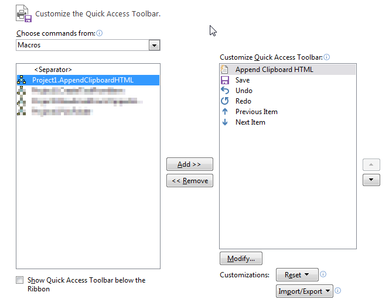

Org mode to Outlook
I keep my meeting agendas and minutes in Orgmode for everything I do at work. However, when it comes time to share them, they need to be pretty in email. That's where a little bit of scripting and existing exporting features plays nicely.
Setup the export
The export step is really quite easy. Just do a C-c C-e followed
by h H for HTML export into a new buffer. The nice touch is that
this is also added to the clipboard.
For my purposes, I keep several meetings in one project file. Before exporting, I narrow the tree to just the agenda or minutes that I want to send. Then, I export the narrowed scope.
I keep meeting entries like the following example.
* TODO WW01 Awesome Meeting ** Awesome Agenda - foo - foo - foo ** Awesome Minutes - bar - bar - bar
Setup Outlook
Most of my communication work happens through Outlook (2013). That means
that if I wanted, I could send a HTML email to preserve any
formatting from org-export.
And that is just what I do. The following VBA code gets added to Outlook first.
Sub AppendClipboardHTML()
Dim email As Outlook.MailItem
Dim cBoard As DataObject
Set email = Application.ActiveInspector.CurrentItem
Set cBoard = New DataObject
cBoard.GetFromClipboard
email.HTMLBody = email.HTMLBody + cBoard.GetText
Set cBoard = Nothing
Set email = Nothing
End Sub
To add to Outlook, hit Alt-F11 to bring up the VBA editor. In
there, I just add a new module and copy in the function from above.
This function only makes sense in context of an email. To enable it
there, I add it to the quick access toolbar at the top. Press
Alt-S-m to open up a new email. Then select the little down arrow
for "Customize Quick Access Toolbar" and select "More Commands".

The next window will have a dropdown box to select the command source. Choose Macros to see a list of your macros within outlook.

Now, simply click on the Add >> button to put it into the list of commands available at the top of emails. The Modify… button will allow you to change the icon or command name.
Insert into email
Now clicking on that button will copy clipboard contents into the email as html. Our raw HTML exported from Orgmode gets inserted nicely and we gain the formatting desired.
The other bonus (or maybe the main point) is that now you can also
use a built-in shorcut for the Quick Access Toolbar commands to run
this one. By pressing Alt, you can see a number by your command.

For me, it is 1 so Alt-1 will run this command for me. I can
keep my meetings organized in Emacs and still use Outlook for
communication.